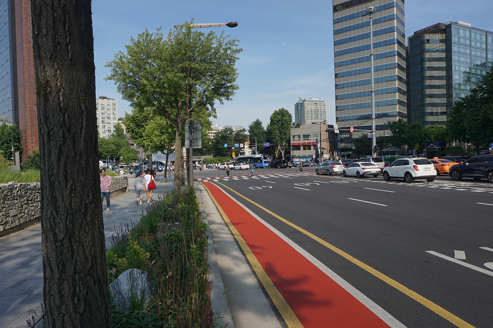
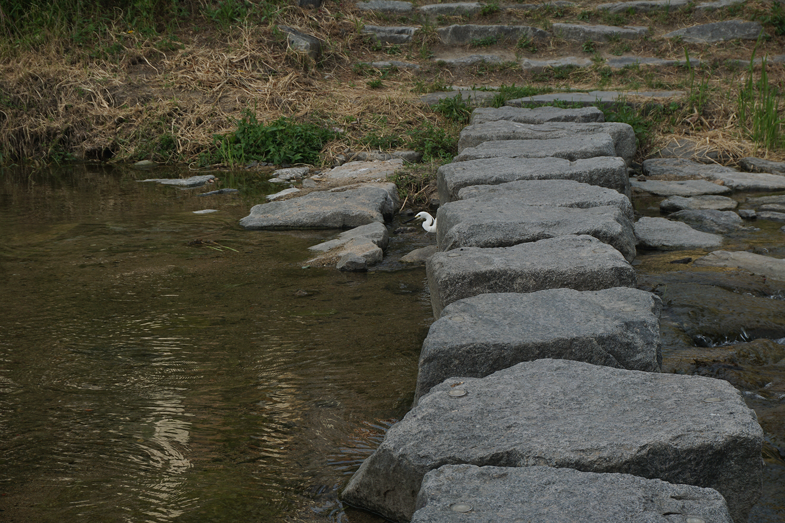
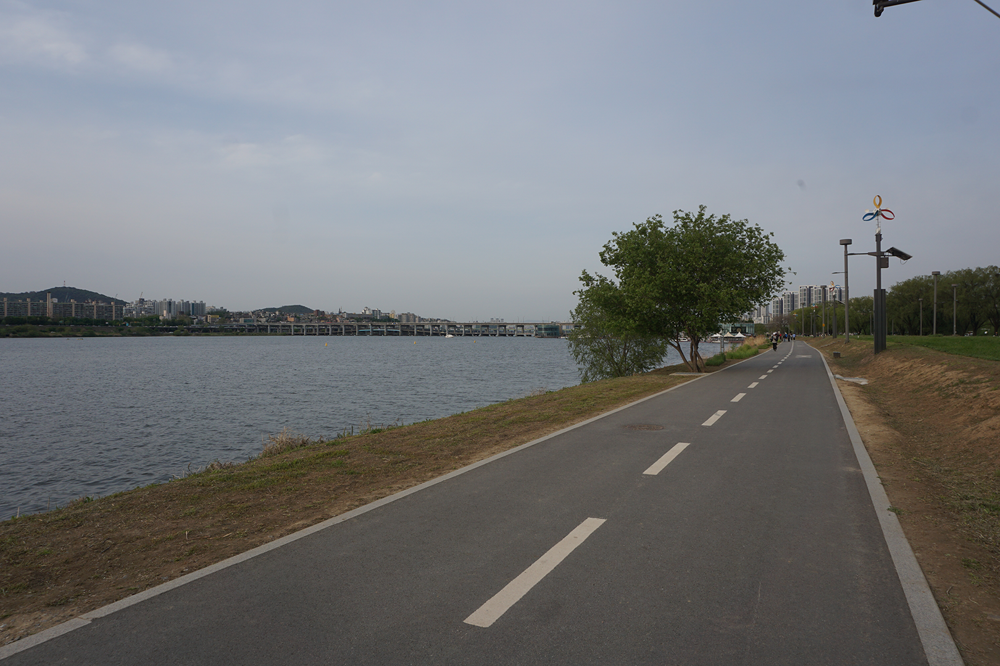
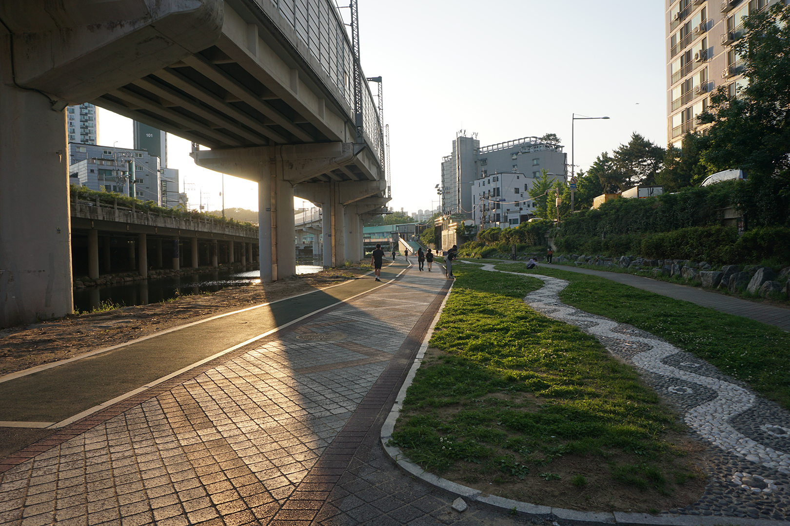

The Paths of Korea
Something that might not come to mind when you think about Korea, and especially Seoul, is walking/exercise paths! But as someone that grew up doing many sports, from soccer to baseball and then eventually, running, these types of areas are very important and critical to me.
When I first made my decision to move to Korea nearly 10 years ago, this was one of the things that made me a little bit unsure about my decision. I was unsure if I was just going to have to run on the streets, which leads to an annoying stop-and-go type run where you can never relax or get into a rhythm.
I really value being able to simply go outside and immediately be able to start running. It is much easier to motivate yourself to go running and exercise, if it is simple and doesn’t require any planning or travel time to factor into your decision. So, I expected that this might have to be something that I would have to adjust to and accept if I was going to enjoy my life in Korea.
But what I was surprised to find is that Korea in fact has some great trails. Miles of uninterrupted trails, even within the city of Seoul!
The Streets

Now, I know I just got done talking about how I don’t like to run on the streets or sidewalks or streets, but I feel they still deserve a mention and some details about them. After all, you are still going to have to deal with them in everyday life or even along the way to the better paths that you want to go to.
It is actually quite hard to generalize the streets of Korea, because they are so variable and different, even just within each district or neighborhood! Seoul, and Korea in general, is very much actively changing all the time and growing up and becoming more modern.
But the one thing I have found pretty consistent everywhere is that, unfortunately, the driving education and level here is, to put it nicely...really terrible. Drivers will run red lights, run through crosswalks without yielding or even looking, and just generally be unaware of you. You have to be hyper-vigilant and check both ways no matter where you are.
There is a rather dark quote that I feel rings especially true in Korea: “The roads are paved with the bodies of people who had the right of way.” It doesn’t matter if you are right, as a pedestrian or cyclist, you are the only one that really loses if you are hit by a car.
When you are in older neighborhoods and districts though, you are often going to run into (pun unintended) a complete lack of sidewalks or paths. You will quite literally just have to move along the road with the cars, but these types of places usually don’t have much traffic, so it is fairly safe.
These neighborhoods are usually pretty old and the houses are built very close together, leaving no room for both a sidewalk and a road.
Cars will be parked on the sides of the road, so you will have to do some weaving to go around them. Just be careful to check for moving cars when you do this. Usually, they are pretty slow moving in these areas though, so it’s pretty safe.
For newer neighborhoods though, for better or worse, they have much larger streets and, subsequently, sidewalks. I actually quite like the sidewalks in Korea. They use brick pavers to make their sidewalks, which is much more interesting and nicer to look at than the bland, unchanging, unyielding concrete sidewalks of America.
The only thing that is not as nice about them is the smooth marble curbs. They look nice, but they have quite a bad downside.
These things become EXTREMELY slippery, especially when they get wet from the rain. Even for someone with good balance and who knows how to fall pretty well without injuring myself, this choice for a curb feels like an INSANE choice. It’s actually quite dangerous, which doesn’t seem that great for older or more injury prone people. I’m not exaggerating here. BE CAREFUL when you step up onto the curbs.
Now onto the bike lanes and sidewalks with bike lanes. I am happy to tell you that there are bike lanes. I would guess that most of them are sort of similar to the US, with the lanes being in the road next to cars.
That being said, I would heavily heed my earlier warnings about the dangers of the roads here and always pay attention. I wouldn’t personally recommend these bike lanes, but they ARE there and can be used.
The other form of bike lanes is dual-use sidewalks with one section being for bikes and one for pedestrians. Unfortunately though, many pedestrians often end up walking on the bike lanes unaware (or uncaring?), so you will almost surely have to slow down, ring your bell, or go around them.
Luckily, there are also some completely separated single-use bike lanes around. And it seems to me that there has been quite an expansion and increase in the number of them around. There are many more than when I first came to Korea, which is a nice sight to see.
The Trails

Now, onto the trails and paths that really inspired this article! The uninterrupted trails!
I will first talk about what they look like and the areas are located in. These trails are surprisingly located all around. They are paved and often painted red, though many are just normal asphalt.
They are nicely lined and split with one side being for each direction. The frustrating part, though, is that many people don’t always follow these rules. People walk on the wrong side all the time or in a group of 5 lined up, completely blocking the path. It can be absolutely infuriating when you want to get by them.
They are even lit up late into the night, allowing you to use them for your late night exercise or strolls. I once finished a run at 2am and it was still lit up nicely, allowing me to still feel safe and enjoy my run.
The trails exist along the many streams and rivers that exist around the area. If you look at a map, anywhere you see water or a stream, a path likely exists there! Because these paths are often located at a lower level than the surrounding buildings and architecture, this leads to the paths being completely uninhibited.
No traffic lights. No street crossings. Nothing! Sometimes you will have to cross a bridge or rock bridge across a stream or something, but I actually find these rather fun.
Cheonggyecheon Stream

If you have researched about places to go in Seoul or have actually visited yourself, you will have undoubtedly heard about Cheonggyecheon Stream. The place that is normally written about is in the main area in downtown Seoul. I wouldn’t recommend going there for exercise or running as much, because it can get quite crowded or cramped there. But if you follow that path downstream, it becomes much more open and empty.
This stream flows all the way to the Han River (also commonly referred to as Hangang), where it will meet with the main paths along the river. Along Cheonggyecheon, there are also some random smaller streams and tributaries that end in Cheonggyecheon, such as Bomun-cheon and Seongbuk-cheon. As someone who attended Korea University, I have utilized these streams especially often to get to Cheonggyecheon and the Han River as they are located quite close to the university.
For you bikers, though, I unfortunately have some bad news for you. You don’t get the benefit of uninhibited trails everywhere.
Your mileage may vary on which streams allow bikes or not. There will be signage indicating if you are allowed to bike there or not. Especially along most of Cheonggyecheon, you will unfortunately have to ride at street level, although on a pretty nice bike-only path. But you will have to deal with traffic and some street crossings. Thankfully though, they aren’t as busy, so the crossings are usually quick and simple.
Namsan Tower

When you arrive in Seoul, your eyes will be drawn to a couple different things. The first thing you might notice is Namsan Tower, also known as N Seoul Tower.
This popular attraction serves as a landmark that can easily be used anywhere in the city to tell where you are, which leads us to the next trail. Namsan Tower is located on top of a small mountain, so there are many trails up. These trails start in various places, such as near Myeongdong or Dongguk University station. I will include a map with various starting points.
On most of these trails, no cars are allowed, so it is very relaxing and you don’t have to constantly be on the lookout and checking for cars. And even the ones that do have cars have large lanes on the side for pedestrians to comfortably use.
Now, as the trails lead up to the tower on the top of the mountain, this means that the trails are going uphill and can get steep! So be prepared and know what you are getting into before you decide to go here.
Another big plus about these trails is that there are a lot of trees and plants all over the mountain, so there is a lot of shade to stay cool and enjoy your trek.
It also leads to a very pretty background during the various different seasons, such as when the fall leaves change color or the cherry blossoms are in bloom. I find it to be a very nice set of trails to go to all year round. It seems most optimal to use it for running or hiking, which is what I use it for, but you CAN ride bikes up it. I have seen it, but it seems like a pretty brutal ride for bike riders, so respect to those of you that want to tackle it. Maybe I will join you some day if I get into cycling.
The Han River

Now, that brings us to the source and reason for so many of these trails: The Han River trails.
These trails are on both sides of the river and stretch for MILES in both directions (or kilometers; yes, I am unashamedly American.). Spanning up to 150 miles(240km)!
They are almost COMPLETELY uninterrupted, with only 1 stoplight light located at Banpo Bridge, although there may be more than I am unaware of. But I have personally run up to 20 miles without running into one stoplight.
There are both pedestrian lanes and bike lanes, allowing them to split up, so pedestrians and cyclists don’t run into and endanger each other.
Along the way, there are various parks, exercise areas with outdoor equipment, and even small sports fields. In addition to the main paths, you will even find random small offshoots to small gardens or plants or random art pieces located on the trail. There are even bathrooms conveniently located around, so you don’t have to leave the river to go searching for a bathroom.
If you exercise or explore around the river, you are bound to run into tons of people also enjoying them, especially in good weather. You will see various running clubs, biking clubs, friends enjoying the outdoors together, and much more. You can go to and start from anywhere along the river, but some more popular and easily accessible locations include Banpo Bridge, Seoul Forest, Ttukseom Park, and Yeouido.
These paths are such an amazing addition to the city and make it feel so much more alive and nicer to live in. These paths are truly one of the crown jewels of Seoul. And I don’t think they get talked about enough. Yes, the Han River and some of the parks are often talked and written about, but specifically the trails need to be mentioned WAY more.
The Bonuses

That’s all I have to write about for the main routes. A couple more that I feel are worth noting are Jungangcheon Stream, Tancheon Stream, and Anyangcheon Stream.
But there are so many more, including some I probably don’t know about or am forgetting. But another way to explore and experience the city is to find your own path! One of my recommendations is to just look at a map and find the paths from there. Wherever you see a stream or green area or park, there is almost surely going to be a decent path for you to use, so go wild and explore all around. Even the places that are less talked about.
Conclusion

Surprisingly, Seoul, and Korea as a whole, is actually quite a nice place for running, biking, and exercising. And it is only getting better!
I was away from Korea for one year and when I came back, I was floored to see the massive expansion and beautification of so many of the trails I regularly run on. Seoul is becoming quite the biker’s and runner’s playground. I will always advocate for and cheer on these public works projects, because they make daily life just that much better.
While this article and the recommendations inside ended up skewing heavily Seoul-based, most of the info is entirely relevant for the other cities and even towns in Korea. There are great trails in bigger, more popular areas like Daejeon, Busan, Jeonju, and Gangleung.
But I have even found great trails in the countryside and smaller towns. So if you are a runner, biker, or even just someone who wants to walk around and you come to Korea, I highly recommend you just explore around and see what you can find.
Go wild! The paths are a great way to explore this vibrant and interesting country!